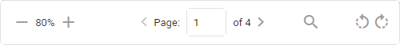

Use the shortcuts X and Z to navigate between highlighted hits in all three search hit navigators displayed below (Search Hits for Keyword Search, Keywords for Keyword Highlighting and Search within document (Ctrl+F)). The active navigator has a blue outline.
|
|
Note: If the cursor is still in the search box (opened with Ctrl + F), use ENTER or SHIFT+ENTER to jump between hits. |


When hidden content is detected with Document Insights, you are notified with the  icon next to the document name.
icon next to the document name.
View the list of all Shortcut Keys.
Resize the displayed file by moving the vertical beams on the left and right side.
Navigate from document to document with the buttons Previous and Next. In the example below, you are viewing the 3th out of (in total) 50 documents, which is listed on page 1 of (in total) 2 Document List pages.

View number of duplicates next to document name. Select the icon to view the list of duplicates.
Show/hide panels with these arrows:
(Un)collapse panels with these arrows:

Increase/decrease Document Info size with or
See bottom of page to zoom in/out, navigate through the pages of the document, Search in Document (you can also use Ctrl+F) and/or rotate your document.

For more information—see Document View.